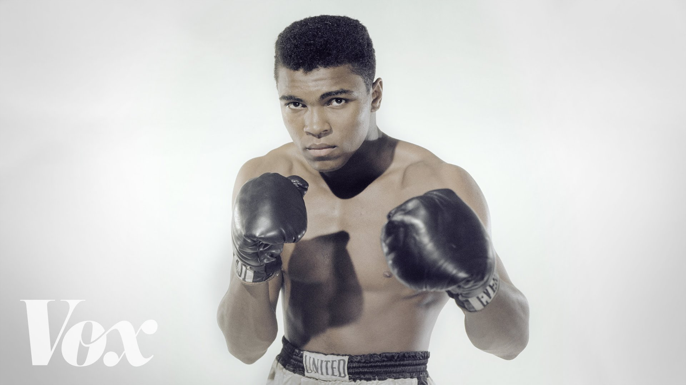
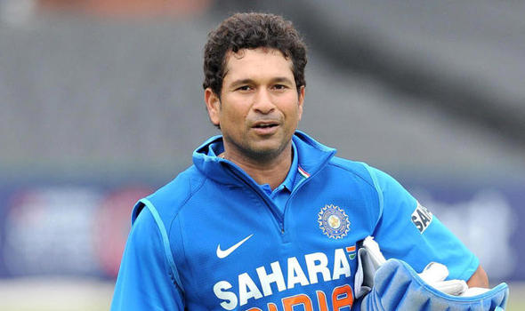

Muhammad Ali born Cassius Marcellus Clay Jr () January 17, 1942 – June 3, 2016) was an American professional boxer, activist and philanthropist. He is widely regarded as one of the most significant and celebrated sports figures of the 20th century. From early in his career, Ali was known as an inspiring, controversial, and polarizing figure both inside and outside the ring.He was regarded as one of the the greatest boxer of all time.

Sachin Ramesh Tendulkar born 24 April 1973 is a former Indian international cricketer and a former captain of the Indian national team, regarded as one of the greatest batsmen of all time.[4] He is the highest run scorer of all time in International cricket. Often referred to as the 'God of Cricket' by Indian cricket followers,[5] Tendulkar took up cricket at the age of eleven, made his Test debut on 15 November 1989 against Pakistan in Karachi at the age of sixteen, and went on to represent Mumbai domestically and India internationally for close to twenty-four years. He is the only player to have scored one hundred international centuries, the first batsman to score a double century in a ODI, the holder of the record for the most number of runs in both Test and ODI, and the only player to complete more than 30,000 runs in international cricket.